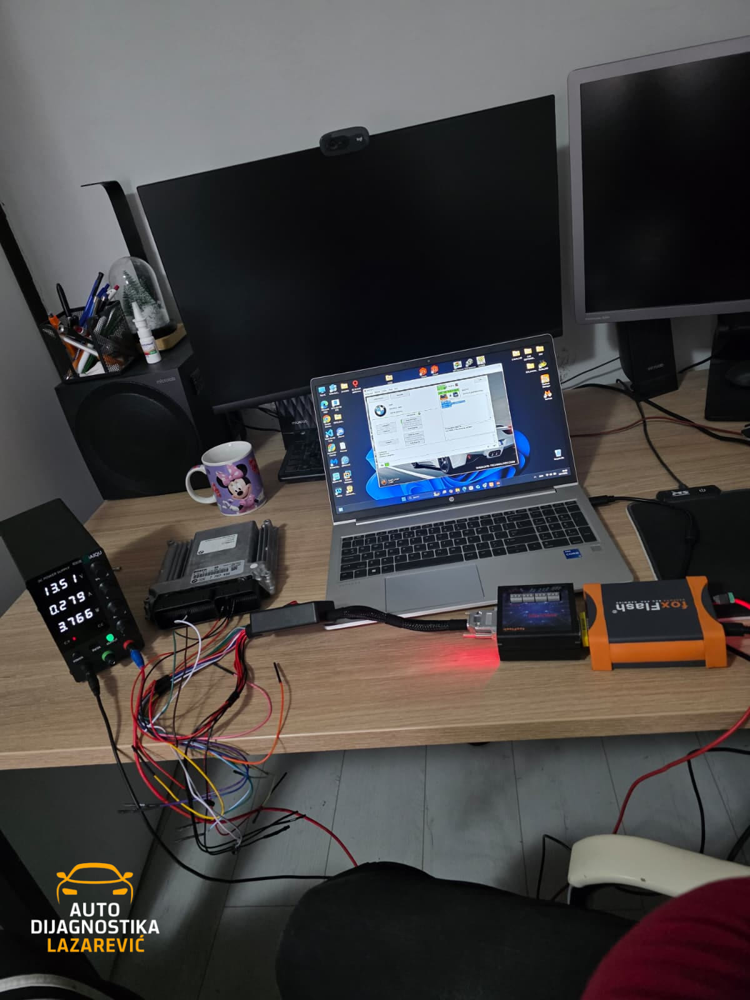
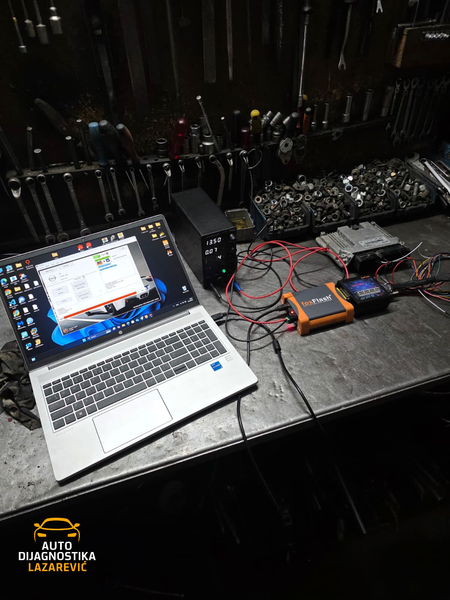
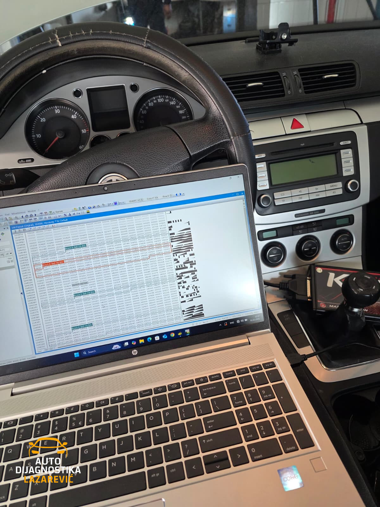
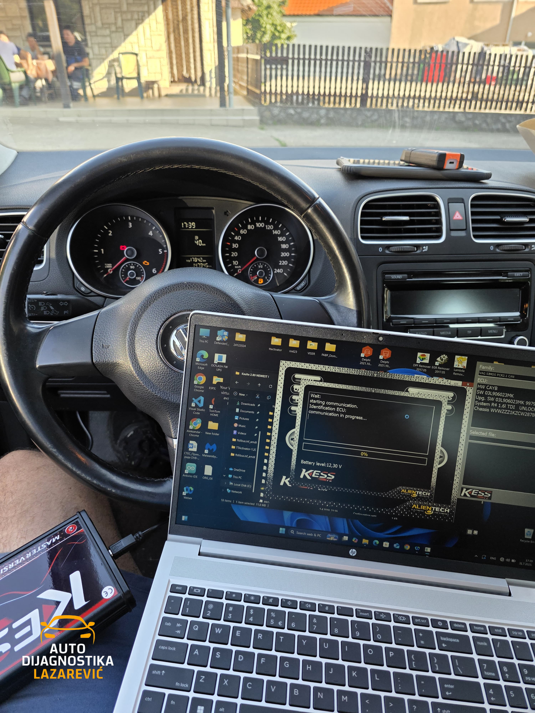
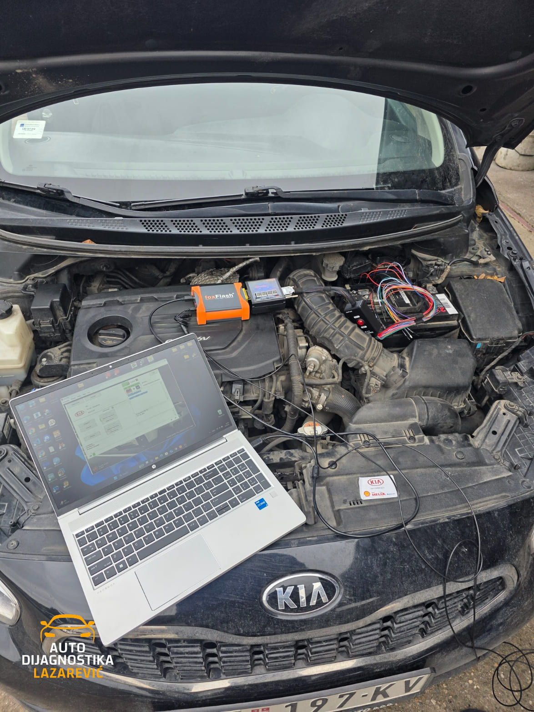
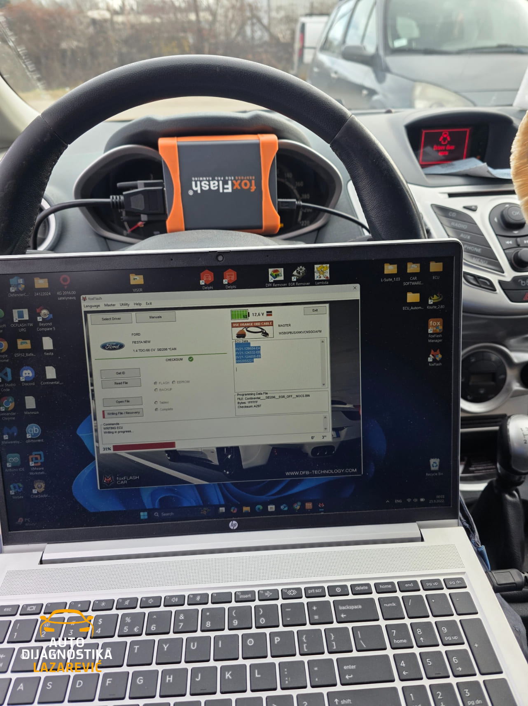
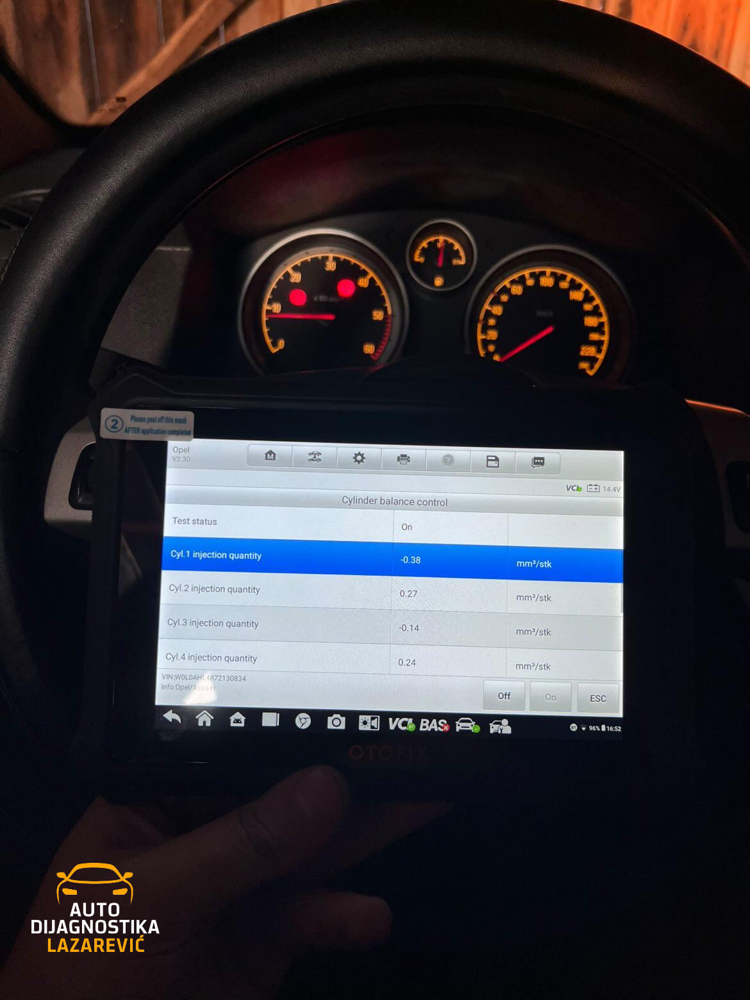

Naša Galerija
Pogledajte deo našeg rada i vozila koja smo servisirali

BMW 118d | EGR OFF

Opel Corsa D 1.3 CDTi EcoFlex | DPF OFF

VW Passat B6 1.9 TDI | DPF OFF

VW Golf 6 1.6 TDI | DPF OFF

Kia Ceed 1.4 CRDi | DPF OFF

Ford Fiesta MK6 1.4 TDCi | EGR OFF

Škoda Octavia vRS | Ažuriranje softvera i mapa RNS 510

Opel Astra H | Dijagnostika i provera parametara